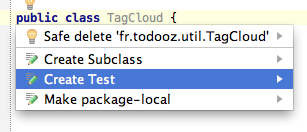
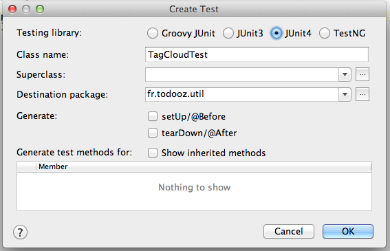
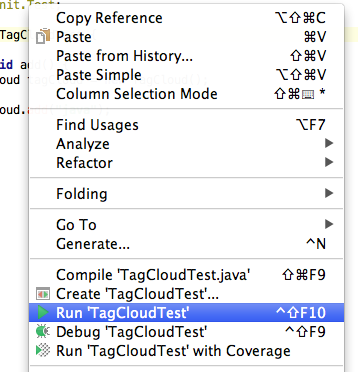
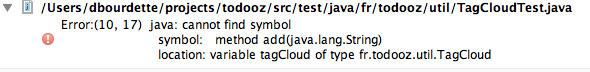
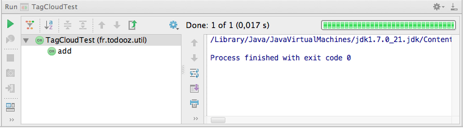

Nous allons commencer à rajouter des services et nous aimerions avoir la garantie qu'ils fonctionnent.
Pour ce faire, nous allons utiliser la technique de développement par les tests.
JUnit est une librairie de tests unitaires pour java qui va nous aider dans ce but.
Elle appartient à la famille des librairies xUnit initiée par Kent Beck et Erich Gamma.
Elle permet d'écrire simplement des tests unitaires qui valident le fonctionnement du code.
Elle fonctionne en utilisant des assertions qui valident le comportement du code testé.
public class PersonTest {
@Test
public void fullname() {
Person person = new Person("John", "Doe");
Assert.assertEquals("fullname is incorrect", person.getFullname(), "John Doe");
}
}
Lors de l'écriture du code, c'est une aide à la conception.
Une fois le code écrit, c'est une protection contre les risques de regressions.
Pour nous exercer, nous allons coder une classe TagCloud par les tests.
Avant de pouvoir écrire du code, nous devons ajouter junit
<dependency> <groupId>junit</groupId> <artifactId>junit</artifactId> <version>4.11</version> <scope>test</scope> </dependency>
La version 4 de junit supporte les annotations qui permettent d'écrire les tests plus simplement.
Il est possible de chercher la dernière version disponible via search.maven.org en recherchant junit.
Nous allons ajouter une classe TagCloud dans le package fr.todooz.util
public class TagCloud {
}
Cette classe nous servira afin d'afficher le tag cloud en colonne de droite du site.
Voici ce que nous voudrions qu'elle fasse pour le moment :
Nous allons rajouter tout cela au fil des tests unitaires.
Par convention, une classe de test porte le nom de la classe testée, suffixée par "Test".
Si il n'existe pas, on crée le répertoire src/test/java dans notre projet.
On ajoute la classe TagCloudTest dans le package fr.todooz.util mais coté sources de test (src/test/java).
On peut faire ça rappidemebt avec le raccourcis Alt + Entrée depuis la classe :
Ce qui donne :
Nous allons commencer par la méthode add. On écrit le unitaire suivant.
public class TagCloudTest {
@Test
public void add() {
TagCloud tagCloud = new TagCloud();
tagCloud.add("java");
}
}
On exécute le test en faisant un click droit sur la classe puis Run TagCloudTest.
Actuellement, ce test ne passe pas car la méthode add n'existe pas dans notre TagCloud.
Il suffit donc de la créer.
public class TagCloud {
public void add(String tag) {
}
}

Elle ne fait rien, mais le test passe. Ajoutons un autre test.
@Test
public void size() {
TagCloud tagCloud = new TagCloud();
tagCloud.add("java");
Assert.assertEquals(1, tagCloud.size());
}
Nous pourrions implémenter cette méthode avec un simple compteur incrémenté lors de l'appel de add().
Nous allons plutôt utiliser une List dès à présent.
public class TagCloud {
private List<String> tags = new ArrayList<>();
public void add(String tag) {
tags.add(tag);
}
public int size() {
return tags.size();
}
}
Avec ce code, les 2 tests passent.
Afin de pouvoir écrire plus facilement nos tests, on ajoute une méthode add(String...) avec un vararg.
@Test
public void addMutiple() {
TagCloud tagCloud = new TagCloud();
tagCloud.add("java", "ruby", "python");
}
Sans oublier de tester les cas limites.
@Test
public void addEmpty() {
TagCloud tagCloud = new TagCloud();
tagCloud.add();
}
@Test
public void addNull() {
TagCloud tagCloud = new TagCloud();
tagCloud.add((String[]) null);
}
Actuellement, nous pouvons avoir plusieurs fois le même tag dans la collection.
Nous ajoutons donc une méthode contains qui servira à répondre à ce besoin.
@Test
public void contains() {
TagCloud tagCloud = new TagCloud();
tagCloud.add("java");
Assert.assertTrue(tagCloud.contains("java"));
}
On modifie le test size() afin de vérifier que le même tag ne compte pas 2 fois.
@Test
public void size() {
TagCloud tagCloud = new TagCloud();
tagCloud.add("java", "java", "python");
Assert.assertEquals(2, tagCloud.size());
}
De même, les tags vides ou null ne devraient pas compter.
@Test
public void size() {
TagCloud tagCloud = new TagCloud();
tagCloud.add("java", "java", "python", "", null);
Assert.assertEquals(2, tagCloud.size());
}
C'est le dernier élément de notre liste de besoins initiaux.
Lorsque nous utiliserons notre tagCloud, il se peut qu'il y ait des centaines de tags définis et nous voudrons en afficher qu'un jeu réduit.
@Test
public void top() {
TagCloud tagCloud = new TagCloud();
tagCloud.add("java", "ruby", "python", "c#", "groovy");
tagCloud.top(3);
Assert.assertEquals(3, tagCloud.size());
}
Avec les conditions aux limites.
@Test
public void topTooFew() {
TagCloud tagCloud = new TagCloud();
tagCloud.add("java");
tagCloud.top(3);
Assert.assertEquals(1, tagCloud.size());
}
@Test
public void topNegative() {
TagCloud tagCloud = new TagCloud();
tagCloud.add("java");
tagCloud.top(-2);
Assert.assertEquals(0, tagCloud.size());
}
Afin de pas toujours avoir les mêmes n premier tags, nous allons mélanger notre tagCloud.
@Test
public void shuffle() {
TagCloud tagCloud = new TagCloud();
tagCloud.add("java", "ruby", "python", "c#", "groovy");
tagCloud.shuffle();
Assert.assertEquals(5, tagCloud.size());
Assert.assertTrue(tagCloud.contains("java"));
Assert.assertTrue(tagCloud.contains("ruby"));
Assert.assertTrue(tagCloud.contains("python"));
Assert.assertTrue(tagCloud.contains("c#"));
Assert.assertTrue(tagCloud.contains("groovy"));
}
On pourrait réfléchir à un algorithme pour implémenter cette méhtode, mais java.util.Collections.shuffle() va nous suffire.
Nous avons ici un problème intéressant pour nos tests unitaires : comment tester le résultat d'un traitement aléatoire ?
Il n'y a pas de solution simple et nous souhaitons garder nos tests simples.
On se contente donc de tester quelques invariants : la taille et le contenu.
Si il devenait important de tester la bonne distribution de la méthode shuffle, comment pourrait on procéder ?
Il s'agit d'une introduction à JUnit qui a permis de jetter les bases de notre classe TagCloud.
Nous ajouterons donc d'autres tests au fur et à mesure des besoins à venir.